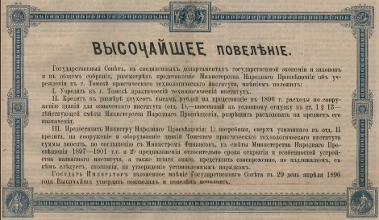
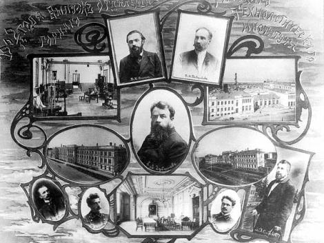
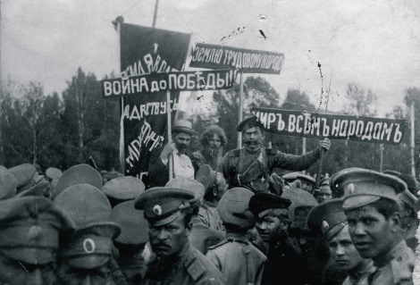
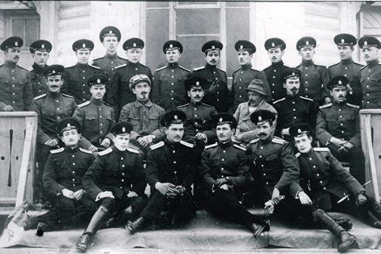
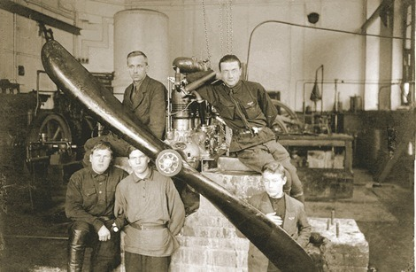
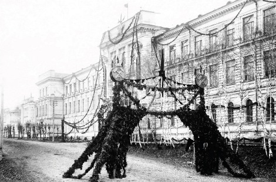
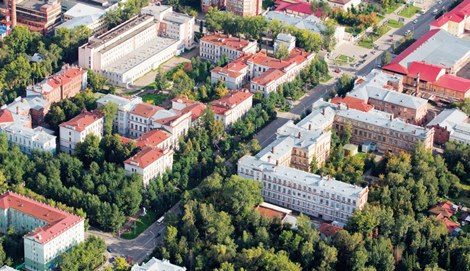
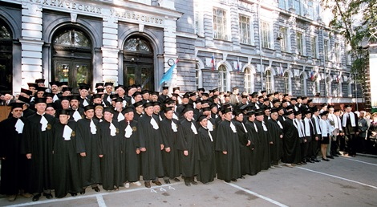
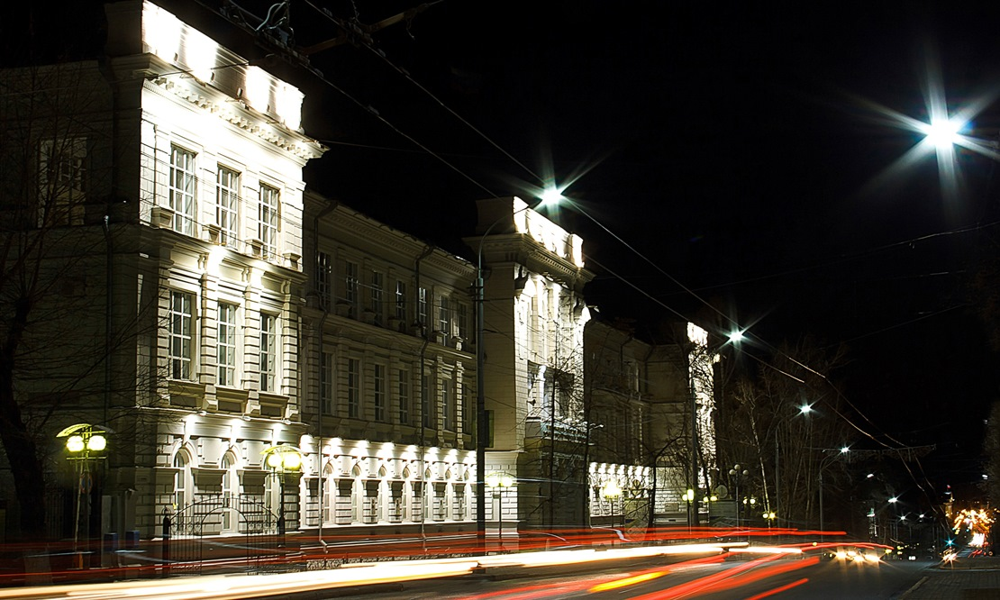

История Томского политехнического датируется концом 19 века, когда началось строительство самой длинной железной дороги в мире — Транссибирской магистрали. Именно ее строительство способствовало активному пополнению населения Сибири за счет переселенцев из европейской части России.
Наш богатейший сибирский край с огромными запасами полезных ископаемых и растущей экономикой требовал грамотных специалистов. Это и стало причиной открытия первого за Уралом заведения высшего технического образования. 11 мая 1896 года императором Николаем Вторым учрежден Томский практический технологический институт.
Особую роль в рождении ТТИ сыграл гениальный химик, великий ученый Дмитрий Иванович Менделеев. Он принимал активное участие в разработках проектов строительства вуза, оснащении лабораторий и кафедр новейшим оборудованием и занимался подбором профессиональных научных кадров. Именно он рекомендовал на должность первого директора института своего ученика Ефима Зубашева.
Занятия в вузе начались в 1900 году, первый иностранный студент появился на инженерно-строительном отделении ТТИ уже в 1902 году и был одним из 58 первых студентов отделения. Первыми учителями томских политехников стали легендарные личности, среди которых — выдающийся геолог, основоположник сибирской горно-геологической школы Владимир Обручев.
|  |  |
Студенты технологи активно участвовали в протестном движении начала века. По этой причине ТТИ неоднократно закрывали. Большое влияние на вуз оказала и Первая мировая война. 700 студентов и служащих института были призваны в действующую армию. Часть корпусов была отдана под размещение войск. Россия вступает в огонь гражданской войны.
В это сложное для всей страны время в ТТИ работал выдающийся ученый, будущий лауреат Нобелевской премии Николай Семенов. В это же время в институте работало множество ученых страны, эвакуированных из крупных городов империи. Несмотря ни на что — работа продолжалась. В 1918 был создан Сибгеолком, который сначала возглавил профессор ТТИ, будущий организатор нефтяной промышленности в Калифорнии Павел Гудков, а затем — выдающийся ученый, воспитавший многие поколения геологоразведчиков, первый сибирский академик, выпускник ТТИ Михаил Усов. Под эгидой этой организации в 1919 году из Томска отправилась экспедиция по разведке Норильских угольных и медно-никелевых месторождений. Ее возглавил выпускник ТТИ Николай Урванцев. Выпускник ТТИ 1914 года Матвей Капелюшников, впоследствии крупный ученый в области нефтяной и горной механики, изобрел первый в мире редукторный турбобур, забойный двигатель для глубокого бурения и создал первый советский крекинг-завод.
|  |  |
Уже в 20 годах состав студенчества стал значительно меняться. В аудитории и лаборатории Томского технологического института пришли новые студенты: комсомольцы и партийцы. В 1923 году при ТТИ был создан первый сибирский научно-исследовательский институт — прикладной физики, будущий СФТИ. В 1925 году вуз торжественно отметил 25-летие со дня открытия и получил почетное наименование «Сибирский технологический».
В 1927 году в стенах института создан первый сибирский самолет Авиэтта «СТИ-1», а 1929 считается годом рождения вертолета. Это слово и сам летательный аппарат придумал наш выпускник, советский авиаконструктор, создатель вертолётов «Ка», доктор технических наук Николай Камов.
В 1926 году институт стал носить имя Феликса Дзержинского, впрочем, уже через 4 года был переименован — на этот раз в Сибирский механико-машиностроительный институт.
На базе СТИ были образованы одиннадцать втузов: горный, строительный, мукомольный и другие. Еще через 4 года несколько вузов слились в единый Томский индустриальный институт имени Сергея Кирова. Вместе со страной вуз пережил НЭП, индустриализацию, репрессии. В 1940 году он получил первую награду от государства — орден Трудового Красного Знамени.
|  |  |
В 1991 году ТПИ одним из первых технических вузов в стране получил статус университета. Была принята концепция развития вуза. Несмотря на сложное политико-экономическое положение в стране, ТПУ продолжал наращивать потенциал. В мае 1992 года был создан Совет попечителей и Ассоциация выпускников. В 1992 году ТПУ стал одним из учредителей Ассоциации инженерного образования России.
В 1997-м ТПУ стал особо ценным объектом культурного наследия народов Российской Федерации. В 2001 году открыт Центр профессиональной подготовки и переподготовки специалистов нефтегазового дела, созданный в партнерстве с университетом Heriot-Watt (Эдинбург, Великобритания).
На рубеже веков ТПУ отметил сразу два юбилея: столетия со дня основания и столетие со дня открытия.
|  |  |
У штурвала крейсера отечественной инженерной науки на протяжении 120 лет стояли 17 ректоров, в том числе с 1980 по 1990 гг. человек-легенда Томского политехнического университета Иван Петрович Чучалин. Ему на смену пришел в 1990 году Юрий Петрович Похолков, который руководил вузом до 2008 года.
В 2009-м для Томского политехнического университета началась новая эра — вузу был присвоен статус Национального исследовательского университета.
В 2010 была изменена структура университета: факультеты и НИИ были объединены в новые подразделения — научно-образовательные институты. Был взят курс на тесное сближение с ведущими корпорациями России и мира. С достижениями университета в ходе различных визитов познакомились первые лица страны, члены кабинета министров и Президенты РФ — Дмитрий Медведев и Владимир Путин.
В 2013 ТПУ стал победителем федерального конкурса на право получения господдержки в продвижении в топ-100 мировых университетских рейтингов.
Сегодня иностранные студенты — четверть всех студентов ТПУ. Представители 50 стран мира, более 5000 тысяч человек.
Сегодня ТПУ один из крупнейших налогоплательщиков региона. Вуз вкладывается в строительную отрасль города, занимается благоустройством и дает работу 6 тысячам сотрудников. 30 лет спустя вуз вновь стал грандиозной строительной площадкой. Был реконструирован стадион «Политехник», масштабные изменения произошли на исследовательском ядерном реакторе ТПУ, студенты живут в новом, 17-тиэтажном общежитии, университетский кампус пережил глобальную санацию, открыты плавательный бассейн и научный парк.
И на этом история университета не заканчивается...
|  |